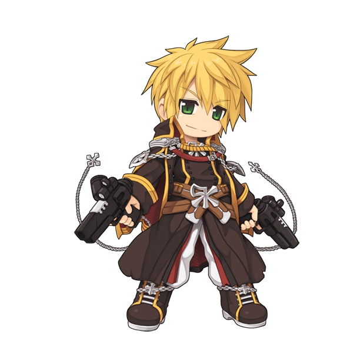

画像にリンクがはってあるものは、クリックすると別窓で大きめサイズが表示されます。
|  |

|
| リベリオン男 | リベリオン女 |

|
|
| リベリオンスキル1 ショットガン型 | リベリオンスキル2 ガトリングガン型 |

|
|
| リベリオンスキル3 グレネードガン型 | リベリオンスキル4 ライフル型 |
back
(c) Gravity Co., Ltd. & Lee MyoungJin(studio DTDS). All rights reserved.
(c) GungHo Online Entertainment, Inc. All Rights Reserved.
当コンテンツの再利用（再転載・配布など）は、禁止しています。